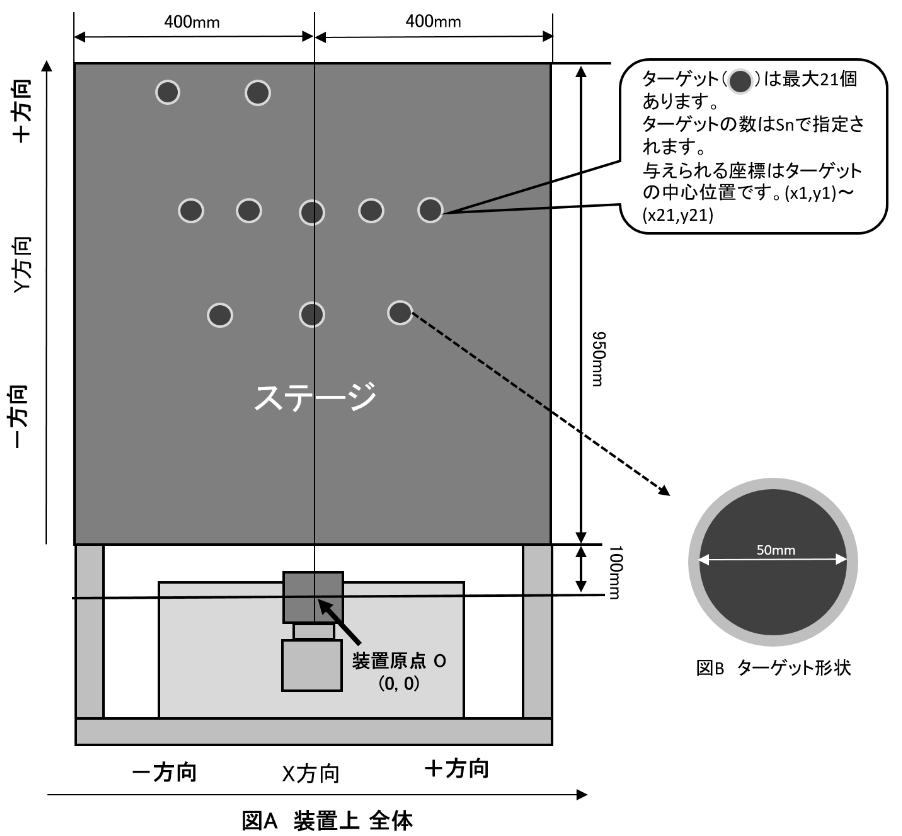
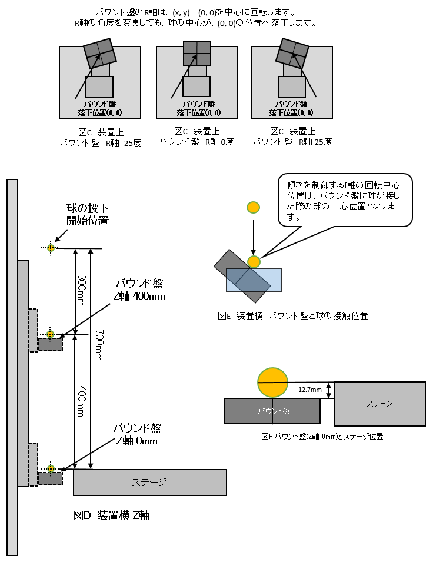
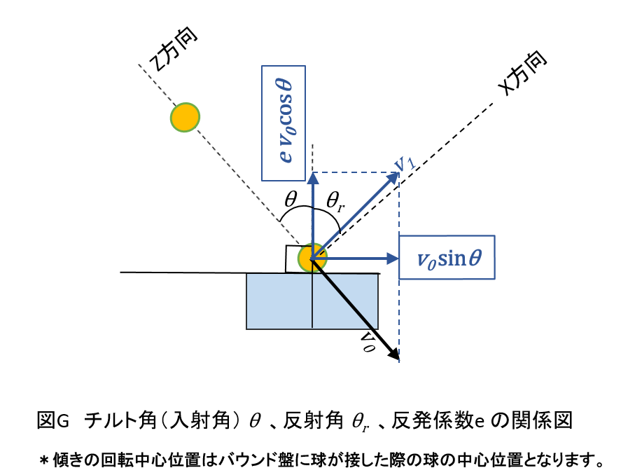
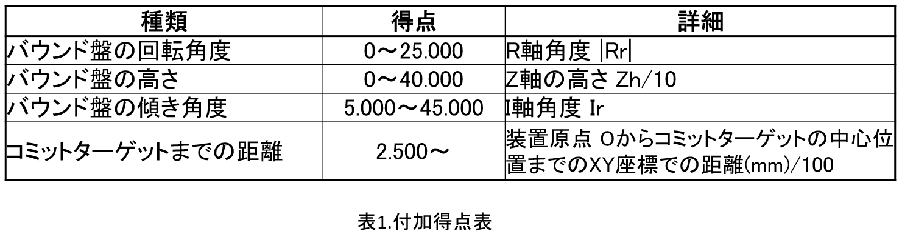
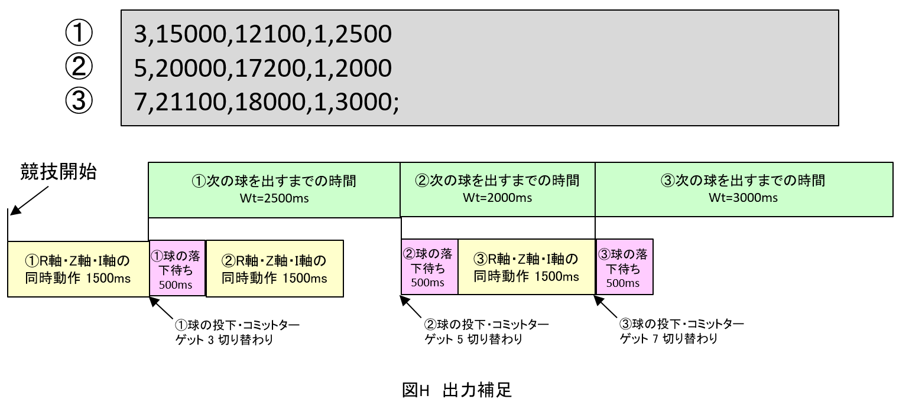
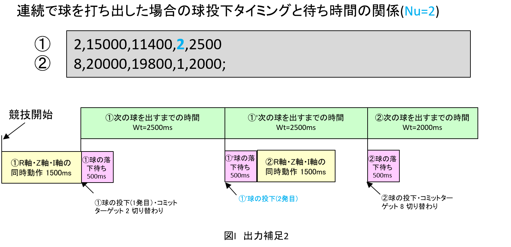
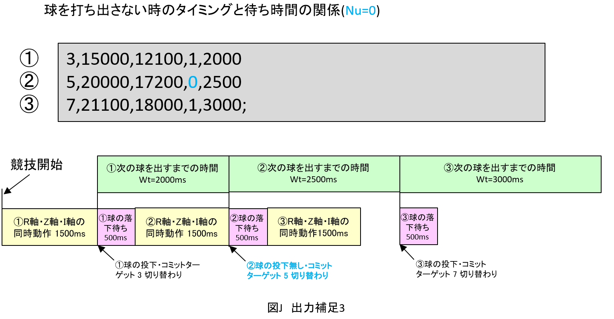

Q1A.敗者復活戦
問題文
装置を制御し、ターゲットに球を入れ得点を競う競技です。
シミュレータ問題では、実機を用いず、ジャッジサーバー上でシミュレーションを行って順位を決定します。このシミュレーションは装置の物理現象や部品・組立時の誤差を考慮しません。


- バウンド盤の高さ・傾き・回転を制御し100秒以内にターゲットに球を入れる競技です。
- 装置制御時間は100秒です。
- ターゲットの個数はテストケースにより変化し、最大21個です。
- 持ち球はターゲットの個数と同じです。
- 球を入れるターゲットを宣言します。
- 宣言したターゲットを以降コミットターゲットと呼びます。
- 球の大きさは直径25.4mmです。
- 球の質量は14.4ｇです。
- バウンド盤の位置を制御する R軸・Z軸・I軸の3軸があります。
- バウンド盤の回転を制御するためのR軸があります。（図C）
- バウンド盤の高さを制御するためのZ軸があります。（図D）
- バウンド盤の傾きを制御するためのI軸があります。（図E）
- Z軸位置は、出力1行目では0mmの位置で、1行進む毎に＋20mm上昇します。
- バウンド盤と球が接触する位置関係は、図Eを参照してください。
- 制限時間内に入った球までが有効です。
シミュレータ制限
- 球をバウンド盤にあて、ターゲットに直接入れてください。
- シミュレータでは、ステージでバウンドせず、球は透過します。
- 球の中心がステージ上面の高さまで落ちた時に、ステージ上面の平面で切断した球の断面が、ターゲットの内径の内側にすべて含まれれば得点とします。
- ステージより球の中心が下に落ちた時点で球が消えます。
- 但し、シミュレータでは、待ち時間(Wt)に達して、次の動作に入った場合、その時点でターゲットに入っていない球は消えます。
制約
- 球、ステージ等は剛体とし、摩擦・空気抵抗・転がり抵抗は無視できるものとし、以下の式に従うものとする。

- 重力加速度 : g = 9.807 (m/s²) = 9.807 × 10³ (mm/s²)
- 反発係数 : e = 0.9
- バウンド盤に衝突する際の入射角 (バウンド盤の傾き) θ 、反射角θr
- バウンド盤に衝突する瞬間の速度v0、バウンド盤に衝突した直後の速度v1
- 得点の計算方法
- 球が入った時の得点
- コミットターゲットに入った場合に100点となります。
- コミットターゲットに入った時の条件により付加得点が加算されます。
- 付加得点は、球がターゲットに入ったときの直前に指定した出力行の値で計算されます。
- コミットターゲット以外のターゲットに入った場合は、10点となります。付加得点はありません。
- 各ターゲット1個に対して有効な球数は1個までです。
- 1個目の球が入った後に、2個目の球が入った場合でも1個目の点数が有効となり、後から入った球の得点は加算されません。
- 距離の付加得点は小数第三位までとし、小数第四位は切り捨てとします。
- 付加得点

- バウンド盤の回転角度による得点
- 設定した回転角度が得点となります。
- 式: |Rr|
- 例: Rr=-23.100°
- |Rr|=23.100° 得点は23.1点入ります。
- バウンド盤の高さによる得点
- バウンド盤の高さが得点になります。
- 式: Zh/10
- 例: Zh=300mm
- 300/10=30.000 得点は30点入ります。
- バウンド盤の傾き角度による得点
- 設定した傾き角度が得点となります。
- 式: Ir
- 例: Ir=18.500°
- Ir=18.500° 得点は18.5点入ります。
- バウンド盤からターゲット中心位置の距離
- 装置原点 Oからコミットターゲットの中心位置までのXY座標での距離が得点となります。
- 式: 距離mm/100
- 例: 距離=820.75mm
- 820.75/100=8.2075 得点は8.207点入ります。
入力
- 入力の値はすべて整数です。
- テストケースは5問出題されます。
Sn x1 y1 x2 y2 x3 y3 x4 y4 x5 y5 x6 y6 x7 y7 x8 y8 x9 y9 x10 y10 x11 y11 x12 y12 x13 y13 x14 y14 x15 y15 x16 y16 x17 y17 x18 y18 x19 y19 x20 y20 x21 y21
Snで指定された個数でターゲットの数がきまります。
Sn=3 の場合は (x1, y1) ～ (x3, y3) が与えれます。
| 1 ≤ Sn ≤ 21 |
|
| -325 ≤ x1～x21 ≤ 325 |
単位: mm |
| 250 ≤ y1～y21 ≤ 1000 |
単位: mm |
出力
- 以下の出力形式で解答し、1問分の入力に対して、1行以上21行以下で、装置の100秒間の動作を指定してください。
- 合計所要時間が100 秒未満であったり100秒を超えるような動作指定を行ってもよいですが、時間切れ後は得点に数えません。
- 1つの入力に対する出力の区切りとして、半角セミコロン”;”をつけて回答してください。
Tn,Ir,Rr,Nu,Wt
- 順にコミットターゲット番号、I軸の角度、 R軸の角度、投下する球の数、 投下後の待ち時間です。（カンマを忘れないこと。）
- これらは以下を満たす整数でなければなりません。
| 1 ≤ Tn ≤ 21 |
ターゲット番号 |
| 5000 ≤ Ir ≤ 45000 |
単位: 1/1000度 |
| -25000 ≤ Rr ≤ 25000 |
単位: 1/1000度 |
| 0 ≤ Nu ≤ 21 |
単位: 個 |
| 2000 ≤ Wt ≤ 10000 |
単位: ms |
コミットターゲット切り替わりと球の投下タイミング及び待ち時間について
- 待ち時間(Wt)の後に、球が投下されます。
- 球の投下時にコミットターゲットが切り替わります。
- 球の落下待ち時間が500msです。
- 軸の動作は1500msです。
- 球を連続で打ち出した場合の待ち時間(Wt)は全ての球の投下時に使用されます。
- 球を出さなかった場合も時間(Wt)は使用されます。
出力例1

出力例2

出力例3

入力例
2 0 500 100 500
4 -100 500 0 500 -100 500 0 800
5 -300 500 -200 500 -100 500 0 800 100 800
8 0 500 100 500 200 500 300 500 -300 800 -200 800 -100 800 0 800
10 -300 500 -200 500 -100 500 0 600 100 600 200 600 300 600 0 800 0 900 300 900
出力例
1,15000,0,1,2000
2,16000,11000,1,2500;
1,18000,-11000,1,2000;
1,16000,-10900,1,2000
3,20000,-11000,1,2500;
5,23000,20500,1,2500;
4,15000,0,1,2000;
採点方法
- 全テストケースでの得点の合計がその提出の得点となります。
- 解答は5問目まで必要です。
- 出力における一番最後の半角セミコロン “;” はあってもなくても構いません。
※以下の入力データをコピーして解答してください。